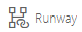
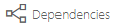

Visualizer Overview
This article provides an overview of the Visualizer module for OnePlan Reporting.
The Visualizer module is a feature of OnePlan plans that enables users to easily view plan dependencies and relationships.
To use the Visualizer, your OnePlan administrator must first set it up. See Set Up Visualizer for instructions.
Video Length - 5:37
Access the Visualizer
Note
The Visualizer module is added to individual plan types and process flow steps within the plan details form. You must be in the correct plan type and process flow step to access the Visualizer module. Consult your OnePlan administrator for a list of plan types and process steps where the Visualizer module is available in your OnePlan environment.
-
Go to the desired plan. Be sure that the plan is in a process flow step where the Visualizer module is available.
-
Go to Reports > Visualizer. The Visualizer module will open.

Get Around the Visualizer
The dots represent plans. You can select how the dots are colored based certain plan data such as # of Backlog Tasks, % Done, and more. This makes it easy to see if plans are getting off track, or may cause issues for its associated plans.
The lines represent the relationships between the plans.

|
Icon / Menu |
Name |
Description |
|---|---|---|
|
 |
Runway view |
Click to access the Runway view. |
|
 |
Dependencies view |
Click to access the Dependencies view. This is the default Visualizer view. |
|
|
Configuration |
Only available in the Runway view. Click to configure the columns in the Runway view. |
|
|
Color By menu |
Select the plan field to drive the dot coloration in the Visualizer. |
|
|
Refresh |
Click to refresh the Visualizer. |
|
|
Zoom Out |
Click to zoom out. |
|
|
Zoom In |
Click to zoom in. |
|
|
View menu |
Only available in the Runway view. Select, save, or delete custom view configurations for the Visualizer. |


Dependencies View
The Dependencies view allows you to visualize your plan successors and dependencies. This allows for better understanding your predecessors and successors and communicating changes and risks to other plan managers.
See Use the Visualizer Dependencies View for instructions on how to use the Dependencies view.

Runway View
The Runway view allows you to better visualize relationships between other plans. For example, you could visualize all of the Objectives, Key Results, Value Streams, Products etc. that are associated to your Project.
See Use the Visualizer Runway View for instructions on how to use the Runway view.